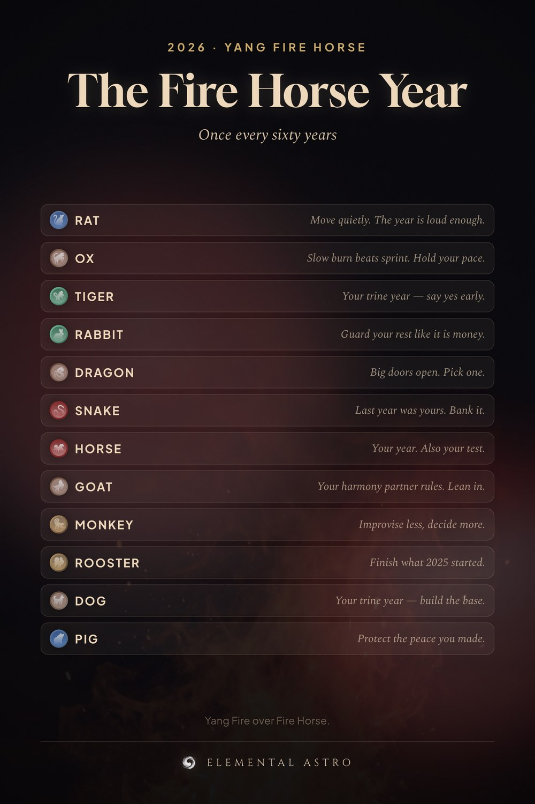

2026 is a yang fire horse year — Yang Fire sitting on Fire Horse. The most combustible pairing in the sixty year cycle, and it only comes around once every sixty years. This chart gives the one-line read for all twelve animals. Save it now, check it all year. 2026 Chinese new year, year of the horse 2026, fire horse, Chinese zodiac forecast.
https://www.elementalastro.io/learn/annual-forecast-2026